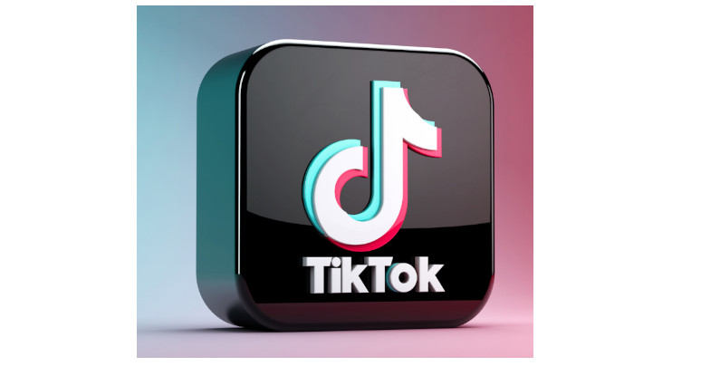
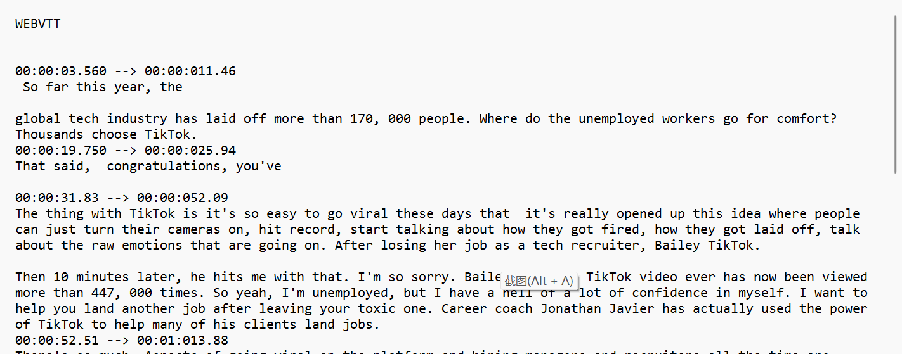

This is my project website of Mad(a), my project is about the impact of tiktok on society. It mainly discuss the effect of tiktok on different aspect of our daily life
In this website, I finished each week lab task and show the process about how to create the website, the following section is about assessment checking list. And it shows How I finished the each week lab tasks.
This is an image of tiktok app.
Title: The Impact of TikTok on Society
Description:
This website explores the multifaceted impact of TikTok, a leading social media platform, on various aspects of society. The focus is on how TikTok is reshaping cultural norms, influencing marketing strategies, altering social interactions, and affecting political discourse. We chose this topic due to the unprecedented rise of TikTok as a cultural phenomenon, which is not only redefining entertainment but also having far-reaching effects on global communication patterns and societal trends.
Value of the Website
The value of this website lies in its comprehensive analysis of TikTok's societal influence. It is designed for academics, marketers, social media enthusiasts, and policymakers. By offering a nuanced exploration of TikTok's role in modern society, the website aims to provide valuable insights for understanding the dynamics of digital culture and its implications on a global scale.
Supporting Content
To enrich the content and offer a well-rounded perspective, the website will include:
Metadata Table: A compilation of key statistics about TikTok, including user demographics, growth trends, and engagement rates.
Literature: Scholarly articles and research papers examining TikTok's social, cultural, and economic impacts.
Media Resources: Videos and documentaries highlighting TikTok trends, user experiences, and expert opinions.
Code Snippets: For those interested in the technical side, some basic code examples demonstrating TikTok API usage or data analysis of TikTok trends.
Tutorials: Guides and discussions on how to leverage TikTok for marketing, content creation, or educational purposes.
Each of these resources will be carefully selected to enhance the understanding of the topic and to provide a diverse range of viewpoints.
By providing these elements, the website aims not only to inform but also to engage its audience in a thoughtful discourse about the evolving role of social media in our society.
Audience Identification
The primary audience for "The Impact of TikTok on Society" is young people, particularly college students. This demographic is actively engaged with social media platforms like TikTok and is keenly aware of their cultural and societal implications.
Unique Offerings of the Website for the audience
Relatable Case Studies: Stories and examples that resonate with the experiences of young adults and college students.
Interactive Learning: Engaging content formats like quizzes, polls, and interactive discussions tailored to a younger, tech-savvy audience.
Trend Analysis: Insights into how TikTok shapes and reflects current youth culture and trends.
Career and Academic Relevance: Information on how understanding TikTok's impact can be beneficial for careers in digital marketing, content creation, and social media strategy.
Experiences Offered and Meeting Audience’s Needs
Educational yet Entertaining: Balancing informative content with an engaging and relatable tone.
Platform for Discussion and Expression: Opportunities for students to share their own experiences and viewpoints regarding TikTok’s influence.
Resource Hub: A collection of resources useful for academic projects, research papers, or personal understanding.
I believe my audience should be the young people and college students, so I choose the four sections around my topic as the narrative points. The four sections is about Cultural influence, Creative Expression and Content Creation, Social Interaction and Global Connectivity and Marketing and Business Opportunities.
Checkpoints
Content Check: All content reflects the narrative points and is accurately represented in the online version.
Design Review: The website’s design aligns with the conceptual structure and narrative points.
Functionality Test: Interactive elements and navigation work smoothly in the online environment.
Feedback Incorporation: Peer feedback is used to refine and improve the website.
I used both the external css file and external link for my website. For the external link, I used the materialize css website's css file style to create my design of the website. Reflecting the energetic and dynamic nature of TikTok with a vibrant color palette. Styling for interactive components like quizzes, sliders, and polls that engage the users. And I use the external css file to design my website's font size and layout.
https://materializecss.com/ This is the website I recommended, and I immitation the css style from this website. You can see the same color as the picture below.
Opening Statement:
"Imagine a world where a minute-long video can start a global movement, shape fashion trends, and even influence political discourse. Welcome to the era of TikTok, a platform not just redefining entertainment but reshaping the very fabric of our society. From viral dances to powerful social movements, TikTok's impact extends far beyond its digital boundaries."
Contextualizing the Topic:
"TikTok, originally perceived as a simple app for teenagers to share short, often humorous videos, has rapidly evolved into a cultural powerhouse with profound societal implications. Its unique algorithm has created a new type of digital community, where content can quickly gain worldwide attention. As we scrutinize TikTok's role in our daily lives, we begin to understand its multifaceted influence – from its impact on mental health to its role in shaping consumer behavior and creating new forms of social interaction. This platform is not just about entertainment; it's a reflection and driver of our times."
Presenting a Key Argument and Its Impact:
"A key argument in understanding TikTok's societal impact is its role in democratizing content creation and consumption. Unlike traditional media, TikTok provides a platform where anyone can become a content creator and reach a global audience, regardless of their background or resources. This has led to the emergence of new voices and perspectives, particularly from marginalized communities, challenging the status quo of content creation. However, this democratization also raises concerns over misinformation, privacy, and the psychological effects of social media addiction. The impact of TikTok is thus a double-edged sword, offering unprecedented opportunities for creativity and expression while posing significant challenges to traditional norms and values."
Conclusion:
"As we navigate the complex tapestry of TikTok's influence on society, it becomes clear that this platform is more than just an app – it's a cultural phenomenon that mirrors and molds our evolving society. As TikTok continues to grow, so too will its impact on various aspects of our lives. Whether this influence will be viewed as a positive force or a challenging disruption remains to be seen. What is certain, however, is that TikTok has forever altered the landscape of social media and its role in our daily lives, marking a new chapter in the digital age. As we conclude this exploration, we're left with a deeper understanding of TikTok's multifaceted impact and the responsibility that comes with such a powerful tool at our fingertips."
picture before edit
picture after edited
I change the size of picture.After edited, the website load time will be fast.
the original audio
edited audio
the following three audios are the three different quality audio, you can play it and listen to the different
Edited video, because the github site can't upload the video size more than 25mb, so I cut the size a lot to make a high quality video.
Closed-Captioning: Closed captions are text versions of the spoken words and other relevant sounds in a video. They are essential for viewers who are deaf or hard of hearing, as they provide a written display of the dialogue and other auditory information.
Transcripts: A transcript is a text version of the audio in a video. It includes dialogue and may also describe important non-speech elements. Transcripts are useful not only for accessibility but also for those who prefer to read rather than listen..
WebVtt is the file of subtitle the video. I must transcript from audio or video to text, then generate the webvtt file.The following picture is the inside of webvtt file, you need have the time zone and text.
Text-to-Speech Functionality: Recognizing that not all users can read text on a screen, I included a text-to-speech option. This feature allows users to listen to the content, making it accessible to individuals with visual impairments or reading difficulties.
Keyboard Navigation: To support users who cannot use a mouse, the entire website was designed to be navigable using keyboard shortcuts. This includes accessible drop-down menus and tab-accessible elements.
Customizable Font Sizes and Contrast Options: Users have the option to adjust font sizes and contrast settings according to their preferences. This personalization supports users with visual impairments and enhances readability.
Alt Text for All Visual Media: Every image, infographic, and video thumbnail includes descriptive alt text. This ensures screen readers can convey the content of these visuals to users who are blind or have low vision.
Closed Captioning for Videos: All embedded videos feature closed captioning, catering to users who are deaf or hard of hearing. This also benefits users who prefer reading over listening.